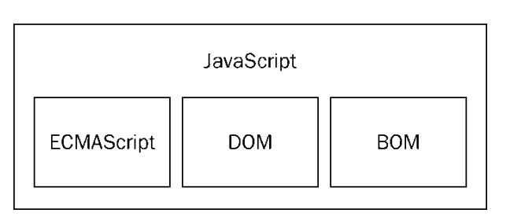
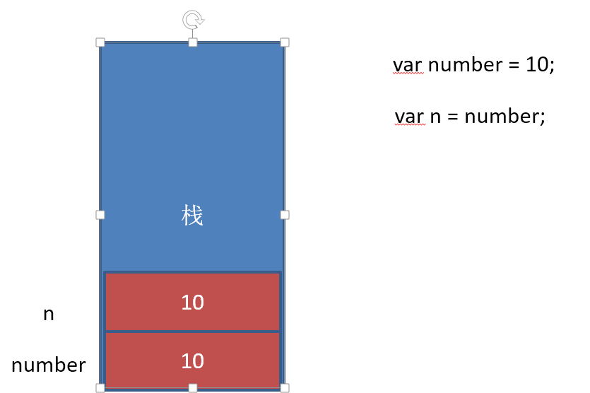

学习目标:
- 掌握编程的基本思维
- 掌握编程的基本语法 typora-copy-images-to: media
JavaScript基础
JavaScript介绍
JavaScript是什么
JavaScript是一种运行在客户端 的脚本语言
Netscape在最初将其脚本语言命名为LiveScript，后来Netscape在与Sun合作之后将其改名为JavaScript。JavaScript最初受Java启发而开始设计的，目的之一就是“看上去像Java”，因此语法上有类似之处，一些名称和命名规范也借自Java。JavaScript与Java名称上的近似，是当时Netscape为了营销考虑与Sun微系统达成协议的结果。Java和JavaScript的关系就像张雨生和张雨的关系，只是名字很像。
JavaScript的解释器被称为JavaScript引擎，为浏览器的一部分，广泛用于客户端的脚本语言，最早是在HTML（标准通用标记语言下的一个应用）网页上使用，用来给HTML网页增加动态功能。
JavaScript和HTML、CSS的区别
- HTML：提供网页的结构，提供网页中的内容
- CSS: 用来美化网页
- JavaScript: 可以用来控制网页内容，给网页增加动态的效果
JavaScript现在的意义(应用场景)
- 网页特效
- 服务端开发(Node.js)
- 命令行工具(Node.js)
- 桌面程序(Electron)
- App(Cordova)
- 控制硬件-物联网(Ruff)
- 游戏开发(cocos2d-js)
JavaScript的组成

ECMAScript - JavaScript的核心
定义了JavaScript的语法规范
JavaScript的核心，描述了语言的基本语法和数据类型，ECMAScript是一套标准，定义了一种语言的标准与具体实现无关
BOM - 浏览器对象模型
一套操作浏览器功能的API
通过BOM可以操作浏览器窗口，比如：弹出框、控制浏览器跳转、获取分辨率等
DOM - 文档对象模型
一套操作页面元素的API
DOM可以把HTML看做是文档树，通过DOM提供的API可以对树上的节点进行操作
JavaScript初体验
JavaScript的书写位置
- 写在script标签中
<head>
<script>
alert('Hello World!');
</script>
</head>
- 写在外部js文件中，在页面引入
<script src="main.js"></script>
注意点
引用外部js文件的script标签中不可以写JavaScript代码
计算机组成
软件
- 应用软件：浏览器(chrome/ie/firefox)、QQ、Sublime、Word
- 系统软件：Windows、Linux、OSX
硬件
- 三大件：CPU、内存、硬盘
- 输入设备：鼠标、键盘、手写板、摄像头等
- 输出设备：显示器、打印机、投影仪等

变量
什么是变量
什么是变量
变量是计算机内存中存储数据的标识符，根据变量名称可以获取到内存中存储的数据
为什么要使用变量
使用变量可以方便的获取或者修改内存中的数据
如何使用变量
- var声明变量
var age;
- 变量的赋值
var age;
age = 18;
- 同时声明多个变量
var age, name, sex;
age = 10;
name = 'zs';
- 同时声明多个变量并赋值
var age = 10, name = 'zs';
变量在内存中的存储
var age = 18;

变量的命名规则和规范
规则 - 必须遵守的，不遵守会报错
由字母、数字、下划线、$符号组成，不能以数字开头
不能是关键字和保留字，例如：for、while。(变量名称为name的注意点)
// 通过浏览器的控制台查看，是带引号的 // name比较特殊，name是window对象的一个属性 var name = 18;区分大小写
规范 - 建议遵守的，不遵守不会报错
- 变量名必须有意义
- 遵守驼峰命名法。首字母小写，后面单词的首字母需要大写。例如：userName、userPassword
案例
- 交换两个变量的值
- 不使用临时变量，交换两个数值变量的值
数据类型
简单数据类型
number、string、boolean、undefined、null
number类型
数值字面量：数值的固定值的表示法
6 7 110
进制
十进制
var num = 9;
进行算数计算时，八进制和十六进制表示的数值最终都将被转换成十进制数值。
十六进制
var num = 0xA;
数字序列范围：0~9以及A~F
八进制
var num1 = 07; // 对应十进制的7
var num2 = 019; // 对应十进制的19
var num3 = 08; // 对应十进制的8
数字序列范围：0~7
如果字面值中的数值超出了范围，那么前导零将被忽略，后面的数值将被当作十进制数值解析
浮点数
- 浮点数的精度问题
浮点数
var n = 5e-324;
浮点数值的最高精度是 17 位小数，但在进行算术计算时其精确度远远不如整数
var result = 0.1 + 0.2; // 结果不是 0.3，而是：0.30000000000000004
console.log(0.07 * 100);
不要判断两个浮点数是否相等
- 数值范围
最小值：Number.MIN_VALUE，这个值为： 5e-324
最大值：Number.MAX_VALUE，这个值为： 1.7976931348623157e+308
无穷大：Infinity
无穷小：-Infinity
数值判断
- NaN：not a number
- NaN 与任何值都不相等，包括他本身
- isNaN: is not a number
- NaN：not a number
string类型
字符串字面量
'程序猿'，'程序媛', "黑马程序猿"
思考：如何打印以下字符串。 我是一个"正直"的人 我很喜欢"传'智'播客"
转义符

字符串长度
length属性用来获取字符串的长度
var str = '黑马程序猿 Hello World'; console.log(str.length);字符串拼接
字符串拼接使用 + 连接
console.log(11 + 11); console.log('hello' + ' world'); console.log('100' + '100'); console.log('11' + 11); console.log('male:' + true);- 两边只要有一个是字符串，那么+就是字符串拼接功能
- 两边如果都是数字，那么就是算术功能。
boolean类型
- boolean字面量： true和false，区分大小写
- 计算机内部存储：true为1，false为0
undefined和null
- undefined表示一个声明了没有赋值的变量，变量只声明的时候值默认是undefined
- null表示一个空，变量的值如果想为null，必须手动设置
复杂数据类型
Object
获取变量的类型
typeof
var age = 18;
console.log(typeof age); // 'number'
字面量
在源代码中一个固定值的表示法。
数值字面量：8, 9, 10
字符串字面量：'黑马程序员', "大前端"
布尔字面量：true，false
注释
单行注释
用来描述下面一个或多行代码的作用
// 这是一个变量
var name = 'hm';
多行注释
用来注释多条代码
/*
var age = 18;
var name = 'zs';
console.log(name, age);
*/
数据类型转换
如何使用谷歌浏览器，快速的查看数据类型？
字符串的颜色是黑色的，数值类型是蓝色的，布尔类型也是蓝色的，undefined和null是灰色的
转换成字符串类型
toString()
var num = 5; console.log(num.toString());String()
String()函数存在的意义：有些值没有toString()，这个时候可以使用String()。比如：undefined和null拼接字符串方式
num + ""，当 + 两边一个操作符是字符串类型，一个操作符是其它类型的时候，会先把其它类型转换成字符串再进行字符串拼接，返回字符串
转换成数值类型
Number()
Number()可以把任意值转换成数值，如果要转换的字符串中有一个不是数值的字符，返回NaNparseInt()
var num1 = parseInt("12.3abc"); // 返回12，如果第一个字符是数字会解析知道遇到非数字结束 var num2 = parseInt("abc123"); // 返回NaN，如果第一个字符不是数字或者符号就返回NaNparseFloat()
parseFloat()把字符串转换成浮点数 parseFloat()和parseInt非常相似，不同之处在与 parseFloat会解析第一个. 遇到第二个.或者非数字结束 parseFloat不支持第二个参数，只能解析10进制数 如果解析的内容里只有整数，解析成整数+，-0等运算
var str = '500'; console.log(+str); // 取正 console.log(-str); // 取负 console.log(str - 0);
转换成布尔类型
- Boolean()
操作符
算术运算符
一元运算符
++、--
前置++
var num1 = 5; ++ num1; var num2 = 6; console.log(num1 + ++ num2);后置++
var num1 = 5; num1 ++; var num2 = 6 console.log(num1 + num2 ++);猜猜看
var a = 1; var b = ++a + ++a; console.log(b); var a = 1; var b = a++ + ++a; console.log(b); var a = 1; var b = a++ + a++; console.log(b); var a = 1; var b = ++a + a++; console.log(b);
逻辑运算符
&& 两个操作数同时为true，结果为true，否则都是false
|| 两个操作数有一个为true，结果为true，否则为false
! 取反
// 练习
var a = 3 && 0 || 2;
var b = 3 || 0 && 2;
var c= 0 || 2 && 3;
alert(a),alert(b),alert(c);
// 面试题
var a = 1+1 && 3;
var b = 0 && 1+1;
var c = 1 || 2 && 3-1;
alert(a);
alert(b);
alert(c);
比较运算符
< > >= <= == != === !==
比较规则：
- 两边都为字符串时，则按照字符串的字符编码进行逐位比较
- 一边为数字，一边为字符串时，则将字符串转换为数字进行比较
- 一边为数字，一边为布尔值时，则将布尔值转换为数字进行比较
==与===的区别：==只进行值得比较，===类型和值同时相等，则相等
var result = '55' == 55; //true
var result = '55' === 55; //false 值相等，类型不相等
var result = 55 === 55; //true
赋值运算符
= += -= *= /= %=
例如：
var num = 0;
num += 5;//相当于 num = num + 5;
运算符的优先级
优先级从高到底
1. () 优先级最高
2. 一元运算符 ++ -- !
3. 算数运算符 先* / % 后 + -
4. 关系运算符 > >= < <=
5. 相等运算符 == != === !==
6. 逻辑运算符 先&& 后||
7. 赋值运算符
// 练习1：
((4 >= 6) || ('人' != '阿凡达')) && !(((12 * 2) == 144) && true)
// 练习2：
var num = 10;
if (5 == num / 2 && (2 + 2 * num).toString() === '22') {
console.log(true);
}
表达式和语句
表达式
一个表达式可以产生一个值，有可能是运算、函数调用、有可能是字面量。表达式可以放在任何需要值的地方。
常识:
只能操作一个值的操作符叫一元操作符,组成的表达式叫一元表达式.(一个值一个运算符)
由两个值和一个运算符连接起来的表达式叫二元表达式。(两个值一个运算符)
由三个值和两个运算符连接起来的表达式叫三元表达式.(三个值两个运算符)
例如：
12
aa++
aa + 56
5 > 6 ? '5' : '6'
语句
语句可以理解为一个行为，循环语句和判断语句就是典型的语句。一个程序有很多个语句组成，一般情况下;分割一个一个的语句
JavaScript所提供的语句分为以下几大类： 1. 变量声明，赋值语句：var。 语法如下： var 变量名称 [=初始值] 例如：var num = 25; 2. 条件和分支语句：if...else，switch。 （后面具体学习） 3. 循环语句：for， for...in，while,break,continue。（后面具体学习） 4. 注释语句：//，/*...*/。 // 这是单行注释 /* 这可以多行注释.... */流程控制
程序的三种基本结构
顺序结构
从上到下执行的代码就是顺序结构
程序默认就是由上到下顺序执行的
分支结构
根据不同的情况，执行对应代码
循环结构
循环结构：重复做一件事情
分支结构
if语句
语法结构
if (/* 条件表达式 */) {
// 执行语句
}
if (/* 条件表达式 */){
// 成立执行语句
} else {
// 否则执行语句
}
if (/* 条件1 */){
// 成立执行语句
} else if (/* 条件2 */){
// 成立执行语句
} else if (/* 条件3 */){
// 成立执行语句
} else {
// 最后默认执行语句
}
案例： 判断一个数是偶数还是奇数 求两个数的最大数 判断一个年份是闰年还是平年 是否年满18岁(是否成年) 分数转换，把百分制转换成ABCDE <60 E 60-70 D 70-80 C 80-90 B 90 - 100 A
三元运算符
表达式1 ? 表达式2 : 表达式3
是对if……else语句的一种简化写法
案例：
是否年满18岁
从两个数中找最大值
switch语句
语法格式:
switch (expression) {
case 常量1:
语句;
break;
case 常量2:
语句;
break;
case 常量3:
语句;
break;
…
case 常量n:
语句;
break;
default:
语句;
break;
}
break可以省略，如果省略，代码会继续执行下一个case
switch 语句在比较值时使用的是全等操作符, 因此不会发生类型转换（例如，字符串'10' 不等于数值 10）
案例：
成绩判定
显示星期几
素质教育（把分数变成ABCDE）千万不要写100个case哟
布尔类型的隐式转换
流程控制语句会把后面的值隐式转换成布尔类型
转换为true 非空字符串 非0数字 true 任何对象
转换成false 空字符串 0 false null undefined
// 结果是什么？
var a = !!'123';
案例
var message;
// 会自动把message转换成false
if (message) {
// todo...
}
循环结构
在javascript中，循环语句有三种，while、do..while、for循环。
for语句
写while循环的经常会忘记自增，for循环其实是while循环演化过来的，语法更加的简洁明了，使用非常的广泛。
for循环语法：
// for循环的表达式之间用的是;号分隔的，千万不要写成,
for (初始化表达式1; 判断表达式2; 自增表达式3) {
// 循环体4
}
执行顺序：1243 ---- 243 -----243(直到循环条件变成false)
- 初始化表达式
- 判断表达式
- 自增表达式
- 循环体
案例：
打印1-100之间所有数
求1-100之间所有数的和
求1-100之间所有数的平均值
求1-100之间所有偶数的和
同时求1-100之间所有偶数和奇数的和
打印正方形
打印直角三角形
打印9*9乘法表
本金10000元存入银行，年利率是千分之三，每过1年，将本金和利息相加作为新的本金。计算5年后，获得的本金是多少？
有个人想知道，一年之内一对兔子能繁殖多少对？于是就筑了一道围墙把一对兔子关在里面。已知一对兔子每个月可以生一对小兔子，而一对兔子从出生后第3个月起每月生一对小兔子。假如一年内没有发生死亡现象，那么，一对兔子一年内（12个月）能繁殖成多少对？（兔子的规律为数列，1，1，2，3，5，8，13，21）
作业：
求1-100之间所有数的乘积
求1-100之间所有奇数的和
计算1-100之间能3整除的数的和
计算1-100之间不能被7整除的数的和
while语句
基本语法：
// 当循环条件为true时，执行循环体，
// 当循环条件为false时，结束循环。
while (循环条件) {
//循环体
}
代码示例：
// 计算1-100之间所有数的和
// 初始化变量
var i = 1;
var sum = 0;
// 判断条件
while(i <= 100){
// 循环体
sum += i;
// 自增
i++;
}
console.log(sum);
案例： 打印100以内 7的倍数 打印100以内的奇数 打印100以内所有偶数的和 打印图形
do...while语句
do..while循环和while循环非常像，二者经常可以相互替代，但是do..while的特点是不管条件成不成立，都会执行一次。
基础语法：
do{
// 循环体;
} while (循环条件);
代码示例：
// 初始化变量
var i = 1;
var sum = 0;
do {
sum += i;//循环体
i++;//自增
} while (i <= 100);//循环条件
案例：
循环输入账号密码的案例用do..while怎么写？
使用do-while循环：输出询问“我爱你，嫁给我吧？”，选择“你喜欢我吗？(y/n):"，如果输入为y则打印”我们形影不离“，若输入为n,则继续询问
continue和break
break:立即跳出整个循环，即循环结束，开始执行循环后面的内容（直接跳到大括号）
continue:立即跳出当前循环，继续下一次循环（跳到i++的地方）
案例：
求整数1～100的累加值，但要求碰到个位为3的数则停止累加
求整数1～100的累加值，但要求跳过所有个位为3的数
求1-100之间不能被7整除的整数的和（用continue）
求200-300之间所有的奇数的和（用continue）
求200-300之间第一个能被7整数的数（break）
调试
- 过去调试JavaScript的方式
- alert()
- console.log()
- 断点调试
断点调试是指自己在程序的某一行设置一个断点，调试时，程序运行到这一行就会停住，然后你可以一步一步往下调试，调试过程中可以看各个变量当前的值，出错的话，调试到出错的代码行即显示错误，停下。
- 调试步骤
浏览器中按F12-->sources-->找到需要调试的文件-->在程序的某一行设置断点
- 调试中的相关操作
Watch:监视，通过watch可以监视变量的值的变化，非常的常用。
F10:程序单步执行，让程序一行一行的执行，这个时候，观察watch中变量的值的变化。
F8：跳到下一个断点处，如果后面没有断点了，则程序执行结束。
tips: 监视变量，不要监视表达式，因为监视了表达式，那么这个表达式也会执行。
- 代码调试的能力非常重要，只有学会了代码调试，才能学会自己解决bug的能力。初学者不要觉得调试代码麻烦就不去调试，知识点花点功夫肯定学的会，但是代码调试这个东西，自己不去练，永远都学不会。
- 今天学的代码调试非常的简单，只要求同学们记住代码调试的这几个按钮的作用即可，后面还会学到很多的代码调试技巧。
数组
为什么要学习数组
之前学习的数据类型，只能存储一个值(比如：number/string。我们想存储班级中所有学生的姓名，此时该如何存储？
数组的概念
所谓数组，就是将多个元素（通常是同一类型）按一定顺序排列放到一个集合中，那么这个集合我们就称之为数组。
数组的定义
数组是一个有序的列表，可以在数组中存放任意的数据，并且数组的长度可以动态的调整。
通过数组字面量创建数组
// 创建一个空数组
var arr1 = [];
// 创建一个包含3个数值的数组，多个数组项以逗号隔开
var arr2 = [1, 3, 4];
// 创建一个包含2个字符串的数组
var arr3 = ['a', 'c'];
// 可以通过数组的length属性获取数组的长度
console.log(arr3.length);
// 可以设置length属性改变数组中元素的个数
arr3.length = 0;
获取数组元素
数组的取值
// 格式：数组名[下标] 下标又称索引
// 功能：获取数组对应下标的那个值，如果下标不存在，则返回undefined。
var arr = ['red',, 'green', 'blue'];
arr[0]; // red
arr[2]; // blue
arr[3]; // 这个数组的最大下标为2,因此返回undefined
遍历数组
遍历：遍及所有，对数组的每一个元素都访问一次就叫遍历。
数组遍历的基本语法：
for(var i = 0; i < arr.length; i++) {
// 数组遍历的固定结构
}
数组中新增元素
数组的赋值
// 格式：数组名[下标/索引] = 值;
// 如果下标有对应的值，会把原来的值覆盖，如果下标不存在，会给数组新增一个元素。
var arr = ["red", "green", "blue"];
// 把red替换成了yellow
arr[0] = "yellow";
// 给数组新增加了一个pink的值
arr[3] = "pink";
案例
求一组数中的所有数的和和平均值
求一组数中的最大值和最小值，以及所在位置
将字符串数组用|或其他符号分割
要求将数组中的0项去掉，将不为0的值存入一个新的数组，生成新的数组
翻转数组
冒泡排序，从小到大
函数
为什么要有函数
如果要在多个地方求1-100之间所有数的和，应该怎么做？
什么是函数
把一段相对独立的具有特定功能的代码块封装起来，形成一个独立实体，就是函数，起个名字（函数名），在后续开发中可以反复调用
函数的作用就是封装一段代码，将来可以重复使用
函数的定义
- 函数声明
function 函数名(){
// 函数体
}
- 函数表达式
var fn = function() {
// 函数体
}
特点：
函数声明的时候，函数体并不会执行，只要当函数被调用的时候才会执行。 函数一般都用来干一件事情，需用使用动词+名词，表示做一件事情
tellStorysayHello等
函数的调用
- 调用函数的语法：
函数名();
特点：
函数体只有在调用的时候才会执行，调用需要()进行调用。 可以调用多次(重复使用)
代码示例：
// 声明函数
function sayHi() {
console.log("吃了没？");
}
// 调用函数
sayHi();
// 求1-100之间所有数的和
function getSum() {
var sum = 0;
for (var i = 0; i < 100; i++) {
sum += i;
}
console.log(sum);
}
// 调用
getSum();
函数的参数
- 为什么要有参数
function getSum() {
var sum = 0;
for (var i = 1; i <= 100; i++) {
sum += i;
}
console.log();
}
// 虽然上面代码可以重复调用，但是只能计算1-100之间的值
// 如果想要计算n-m之间所有数的和，应该怎么办呢？
- 语法：
// 函数内部是一个封闭的环境，可以通过参数的方式，把外部的值传递给函数内部
// 带参数的函数声明
function 函数名(形参1, 形参2, 形参...){
// 函数体
}
// 带参数的函数调用
函数名(实参1, 实参2, 实参3);
形参和实参
- 形式参数：在声明一个函数的时候，为了函数的功能更加灵活，有些值是固定不了的，对于这些固定不了的值。我们可以给函数设置参数。这个参数没有具体的值，仅仅起到一个占位置的作用，我们通常称之为形式参数，也叫形参。
- 实际参数：如果函数在声明时，设置了形参，那么在函数调用的时候就需要传入对应的参数，我们把传入的参数叫做实际参数，也叫实参。
var x = 5, y = 6;
fn(x,y);
function fn(a, b) {
console.log(a + b);
}
//x,y实参，有具体的值。函数执行的时候会把x,y复制一份给函数内部的a和b，函数内部的值是复制的新值，无法修改外部的x,y
案例
- 求1-n之间所有数的和
- 求n-m之间所有数额和
- 圆的面积
- 求2个数中的最大值
- 求3个数中的最大值
- 判断一个数是否是素数
函数的返回值
当函数执行完的时候，并不是所有时候都要把结果打印。我们期望函数给我一些反馈（比如计算的结果返回进行后续的运算），这个时候可以让函数返回一些东西。也就是返回值。函数通过return返回一个返回值
返回值语法：
//声明一个带返回值的函数
function 函数名(形参1, 形参2, 形参...){
//函数体
return 返回值;
}
//可以通过变量来接收这个返回值
var 变量 = 函数名(实参1, 实参2, 实参3);
函数的调用结果就是返回值，因此我们可以直接对函数调用结果进行操作。
返回值详解： 如果函数没有显示的使用 return语句 ，那么函数有默认的返回值：undefined 如果函数使用 return语句，那么跟再return后面的值，就成了函数的返回值 如果函数使用 return语句，但是return后面没有任何值，那么函数的返回值也是：undefined 函数使用return语句后，这个函数会在执行完 return 语句之后停止并立即退出，也就是说return后面的所有其他代码都不会再执行。
推荐的做法是要么让函数始终都返回一个值，要么永远都不要返回值。
案例
- 求阶乘
- 求1!+2!+3!+....+n!
- 求一组数中的最大值
- 求一组数中的最小值
arguments的使用
JavaScript中，arguments对象是比较特别的一个对象，实际上是当前函数的一个内置属性。也就是说所有函数都内置了一个arguments对象，arguments对象中存储了传递的所有的实参。arguments是一个伪数组，因此及可以进行遍历
- 案例
求任意个数的最大值 求任意个数的和
案例
求斐波那契数列Fibonacci中的第n个数是多少？ 1 1 2 3 5 8 13 21...
翻转数组，返回一个新数组
对数组排序，从小到大
输入一个年份，判断是否是闰年[闰年：能被4整数并且不能被100整数，或者能被400整数]
输入某年某月某日，判断这一天是这一年的第几天？
函数其它
匿名函数
匿名函数：没有名字的函数
匿名函数如何使用：
将匿名函数赋值给一个变量，这样就可以通过变量进行调用
匿名函数自调用
关于自执行函数（匿名函数自调用）的作用：防止全局变量污染。
自调用函数
匿名函数不能通过直接调用来执行，因此可以通过匿名函数的自调用的方式来执行
(function () { alert(123); })();函数是一种数据类型
function fn() {}
console.log(typeof fn);
- 函数作为参数
因为函数也是一种类型，可以把函数作为两一个函数的参数，在两一个函数中调用
- 函数做为返回值
因为函数是一种类型，所以可以把函数可以作为返回值从函数内部返回，这种用法在后面很常见。
function fn(b) {
var a = 10;
return function () {
alert(a+b);
}
}
fn(15)();
代码规范
1.命名规范
2.变量规范
var name = 'zs';
3.注释规范
// 这里是注释
4.空格规范
5.换行规范
var arr = [1, 2, 3, 4];
if (a > b) {
}
for(var i = 0; i < 10; i++) {
}
function fn() {
}
作用域
作用域：变量可以起作用的范围
全局变量和局部变量
- 全局变量
在任何地方都可以访问到的变量就是全局变量，对应全局作用域
- 局部变量
只在固定的代码片段内可访问到的变量，最常见的例如函数内部。对应局部作用域(函数作用域)
不使用var声明的变量是全局变量，不推荐使用。
变量退出作用域之后会销毁，全局变量关闭网页或浏览器才会销毁
块级作用域
任何一对花括号（｛和｝）中的语句集都属于一个块，在这之中定义的所有变量在代码块外都是不可见的，我们称之为块级作用域。 在es5之前没有块级作用域的的概念,只有函数作用域，现阶段可以认为JavaScript没有块级作用域
词法作用域
变量的作用域是在定义时决定而不是执行时决定，也就是说词法作用域取决于源码，通过静态分析就能确定，因此词法作用域也叫做静态作用域。
在 js 中词法作用域规则:
- 函数允许访问函数外的数据.
- 整个代码结构中只有函数可以限定作用域.
- 作用域规则首先使用提升规则分析
- 如果当前作用规则中有名字了, 就不考虑外面的名字
var num = 123;
function foo() {
console.log( num );
}
foo();
if ( false ) {
var num = 123;
}
console.log( num ); // undefiend
作用域链
只有函数可以制造作用域结构， 那么只要是代码，就至少有一个作用域, 即全局作用域。凡是代码中有函数，那么这个函数就构成另一个作用域。如果函数中还有函数，那么在这个作用域中就又可以诞生一个作用域。
将这样的所有的作用域列出来，可以有一个结构: 函数内指向函数外的链式结构。就称作作用域链。
// 案例1：
function f1() {
function f2() {
}
}
var num = 456;
function f3() {
function f4() {
}
}

// 案例2
function f1() {
var num = 123;
function f2() {
console.log( num );
}
f2();
}
var num = 456;
f1();

预解析
JavaScript代码的执行是由浏览器中的JavaScript解析器来执行的。JavaScript解析器执行JavaScript代码的时候，分为两个过程：预解析过程和代码执行过程
预解析过程：
- 把变量的声明提升到当前作用域的最前面，只会提升声明，不会提升赋值。
- 把函数的声明提升到当前作用域的最前面，只会提升声明，不会提升调用。
- 先提升var，在提升function
JavaScript的执行过程
var a = 25;
function abc (){
alert(a);//undefined
var a = 10;
}
abc();
// 如果变量和函数同名的话，函数优先
console.log(a);
function a() {
console.log('aaaaa');
}
var a = 1;
console.log(a);
全局解析规则
函数内部解析规则
变量提升
变量提升
定义变量的时候，变量的声明会被提升到作用域的最上面，变量的赋值不会提升。
函数提升
JavaScript解析器首先会把当前作用域的函数声明提前到整个作用域的最前面
// 1、-----------------------------------
var num = 10;
fun();
function fun() {
console.log(num);
var num = 20;
}
//2、-----------------------------------
var a = 18;
f1();
function f1() {
var b = 9;
console.log(a);
console.log(b);
var a = '123';
}
// 3、-----------------------------------
f1();
console.log(c);
console.log(b);
console.log(a);
function f1() {
var a = b = c = 9;
console.log(a);
console.log(b);
console.log(c);
}
对象
为什么要有对象
function printPerson(name, age, sex....) {
}
// 函数的参数如果特别多的话，可以使用对象简化
function printPerson(person) {
console.log(person.name);
……
}
什么是对象
现实生活中：万物皆对象，对象是一个具体的事物，一个具体的事物就会有行为和特征。
举例： 一部车，一个手机
车是一类事物，门口停的那辆车才是对象
特征：红色、四个轮子
行为：驾驶、刹车
JavaScript中的对象
JavaScript中的对象其实就是生活中对象的一个抽象
JavaScript的对象是无序属性的集合。
其属性可以包含基本值、对象或函数。对象就是一组没有顺序的值。我们可以把JavaScript中的对象想象成键值对，其中值可以是数据和函数。
对象的行为和特征
特征---属性
行为---方法
- 事物的特征在对象中用属性来表示。
- 事物的行为在对象中用方法来表示。
对象字面量
字面量：11 'abc' true [] {}等
var o = {
name: 'zs,
age: 18,
sex: true,
sayHi: function () {
console.log(this.name);
}
};
思考：
如何把学生对象、老师对象、英雄对象改写成字面量的方式
对象创建方式
- 对象字面量
var o = { name: 'zs', age: 18, sex: true, sayHi: function () { console.log(this.name); } }; - new Object()创建对象
var person = new Object(); person.name = 'lisi'; person.age = 35; person.job = 'actor'; person.sayHi = function(){ console.log('Hello,everyBody'); } - 工厂函数创建对象
function createPerson(name, age, job) { var person = new Object(); person.name = name; person.age = age; person.job = job; person.sayHi = function(){ console.log('Hello,everyBody'); } return person; } var p1 = createPerson('张三', 22, 'actor'); 自定义构造函数
function Person(name,age,job){ this.name = name; this.age = age; this.job = job; this.sayHi = function(){ console.log('Hello,everyBody'); } } var p1 = new Person('张三', 22, 'actor');属性和方法
如果一个变量属于一个对象所有，那么该变量就可以称之为该对象的一个属性，属性一般是名词，用来描述事物的特征 如果一个函数属于一个对象所有，那么该函数就可以称之为该对象的一个方法，方法是动词，描述事物的行为和功能
new关键字
构造函数 ，是一种特殊的函数。主要用来在创建对象时初始化对象， 即为对象成员变量赋初始值，总与new运算符一起使用在创建对象的语句中。
构造函数用于创建一类对象，首字母要大写。
- 构造函数要和new一起使用才有意义。
new在执行时会做四件事情
new会在内存中创建一个新的空对象
new 会让this指向这个新的对象
执行构造函数 目的：给这个新对象加属性和方法
new会返回这个新对象
this详解
JavaScript中的this指向问题，有时候会让人难以捉摸，随着学习的深入，我们可以逐渐了解
现在我们需要掌握函数内部的this几个特点
1. 函数在定义的时候this是不确定的，只有在调用的时候才可以确定
2. 一般函数直接执行，内部this指向全局window
3. 函数作为一个对象的方法，被该对象所调用，那么this指向的是该对象
4. 构造函数中的this其实是一个隐式对象，类似一个初始化的模型，所有方法和属性都挂载到了这个隐式对象身上，后续通过new关键字来调用，从而实现实例化
对象的使用
遍历对象的属性
通过for..in语法可以遍历一个对象
var obj = {};
for (var i = 0; i < 10; i++) {
obj[i] = i * 2;
}
for(var key in obj) {
console.log(key + "==" + obj[key]);
}
删除对象的属性
function fun() {
this.name = 'mm';
}
var obj = new fun();
console.log(obj.name); // mm
delete obj.name;
console.log(obj.name); // undefined
简单类型和复杂类型的区别
基本类型又叫做值类型，复杂类型又叫做引用类型
值类型：简单数据类型，基本数据类型，在存储时，变量中存储的是值本身，因此叫做值类型。
引用类型：复杂数据类型，在存储是，变量中存储的仅仅是地址（引用），因此叫做引用数据类型。
基本类型在内存中的存储

复杂类型在内存中的存储

基本类型作为函数的参数

复杂类型作为函数的参数

// 下面代码输出的结果
function Person(name,age,salary) {
this.name = name;
this.age = age;
this.salary = salary;
}
function f1(person) {
person.name = "ls";
person = new Person("aa",18,10);
}
var p = new Person("zs",18,1000);
console.log(p.name);
f1(p);
console.log(p.name);
思考：
//1.
var num1 = 10;
var num2 = num1;
num1 = 20;
console.log(num1);
console.log(num2);
//2.
var num = 50;
function f1(num) {
num = 60;
console.log(num);
}
f1(num);
console.log(num);
//3.
var num1 = 55;
var num2 = 66;
function f1(num, num1) {
num = 100;
num1 = 100;
num2 = 100;
console.log(num);
console.log(num1);
console.log(num2);
}
f1(num1, num2);
console.log(num1);
console.log(num2);
console.log(num);
内置对象
JavaScript中的对象分为3种：内置对象、浏览器对象、自定义对象
JavaScript 提供多个内置对象：Math/Array/Number/String/Boolean...
对象只是带有属性和方法的特殊数据类型。
学习一个内置对象的使用，只要学会其常用的成员的使用（通过查文档学习）
可以通过MDN/W3C来查询
内置对象的方法很多，我们只需要知道内置对象提供的常用方法，使用的时候查询文档。
MDN
Mozilla 开发者网络（MDN）提供有关开放网络技术（Open Web）的信息，包括 HTML、CSS 和万维网及 HTML5 应用的 API。
- MDN
- 通过查询MDN学习Math对象的random()方法的使用
如何学习一个方法？
- 方法的功能
- 参数的意义和类型
- 返回值意义和类型
- demo进行测试
Math对象
Math对象不是构造函数，它具有数学常数和函数的属性和方法，都是以静态成员的方式提供
跟数学相关的运算来找Math中的成员（求绝对值，取整）
演示：Math.PI、Math.random()、Math.floor()/Math.ceil()、Math.round()、Math.abs() 、Math.max()
Math.PI // 圆周率
Math.random() // 生成随机数
Math.floor()/Math.ceil() // 向下取整/向上取整
Math.round() // 取整，四舍五入
Math.abs() // 绝对值
Math.max()/Math.min() // 求最大和最小值
Math.sin()/Math.cos() // 正弦/余弦
Math.power()/Math.sqrt() // 求指数次幂/求平方根
案例
- 求10-20之间的随机数
- 随机生成颜色RGB
- 模拟实现max()/min()
Date对象
创建 Date 实例用来处理日期和时间。Date 对象基于1970年1月1日（世界标准时间）起的毫秒数。
// 获取当前时间，UTC世界时间，距1970年1月1日（世界标准时间）起的毫秒数
var now = new Date();
console.log(now.valueOf()); // 获取距1970年1月1日（世界标准时间）起的毫秒数
Date构造函数的参数
1. 毫秒数 1498099000356 new Date(1498099000356)
2. 日期格式字符串 '2015-5-1' new Date('2015-5-1')
3. 年、月、日…… new Date(2015, 4, 1) // 月份从0开始
- 获取日期的毫秒形式
var now = new Date();
// valueOf用于获取对象的原始值
console.log(date.valueOf())
// HTML5中提供的方法，有兼容性问题
var now = Date.now();
// 不支持HTML5的浏览器，可以用下面这种方式
var now = + new Date(); // 调用 Date对象的valueOf()
- 日期格式化方法
toString() // 转换成字符串
valueOf() // 获取毫秒值
// 下面格式化日期的方法，在不同浏览器可能表现不一致，一般不用
toDateString()
toTimeString()
toLocaleDateString()
toLocaleTimeString()
- 获取日期指定部分
getTime() // 返回毫秒数和valueOf()结果一样，valueOf()内部调用的getTime()
getMilliseconds()
getSeconds() // 返回0-59
getMinutes() // 返回0-59
getHours() // 返回0-23
getDay() // 返回星期几 0周日 6周6
getDate() // 返回当前月的第几天
getMonth() // 返回月份，***从0开始***
getFullYear() //返回4位的年份 如 2016
案例
- 写一个函数，格式化日期对象，返回yyyy-MM-dd HH:mm:ss的形式
function formatDate(d) {
//如果date不是日期对象，返回
if (!date instanceof Date) {
return;
}
var year = d.getFullYear(),
month = d.getMonth() + 1,
date = d.getDate(),
hour = d.getHours(),
minute = d.getMinutes(),
second = d.getSeconds();
month = month < 10 ? '0' + month : month;
date = date < 10 ? '0' + date : date;
hour = hour < 10 ? '0' + hour : hour;
minute = minute < 10 ? '0' + minute:minute;
second = second < 10 ? '0' + second:second;
return year + '-' + month + '-' + date + ' ' + hour + ':' + minute + ':' + second;
}
- 计算时间差，返回相差的天/时/分/秒
function getInterval(start, end) {
var day, hour, minute, second, interval;
interval = end - start;
interval /= 1000;
day = Math.round(interval / 60 /60 / 24);
hour = Math.round(interval / 60 /60 % 24);
minute = Math.round(interval / 60 % 60);
second = Math.round(interval % 60);
return {
day: day,
hour: hour,
minute: minute,
second: second
}
}
Array对象
- 创建数组对象的两种方式
- 字面量方式
- new Array()
// 1. 使用构造函数创建数组对象
// 创建了一个空数组
var arr = new Array();
// 创建了一个数组，里面存放了3个字符串
var arr = new Array('zs', 'ls', 'ww');
// 创建了一个数组，里面存放了4个数字
var arr = new Array(1, 2, 3, 4);
// 2. 使用字面量创建数组对象
var arr = [1, 2, 3];
// 获取数组中元素的个数
console.log(arr.length);
检测一个对象是否是数组
- instanceof
- Array.isArray() HTML5中提供的方法，有兼容性问题
函数的参数，如果要求是一个数组的话，可以用这种方式来进行判断
toString()/valueOf()
- toString() 把数组转换成字符串，逗号分隔每一项
- valueOf() 返回数组对象本身
数组常用方法
演示：push()、shift()、unshift()、reverse()、sort()、splice()、indexOf()
// 1 栈操作(先进后出)
push()
pop() //取出数组中的最后一项，修改length属性
// 2 队列操作(先进先出)
push()
shift() //取出数组中的第一个元素，修改length属性
unshift() //在数组最前面插入项，返回数组的长度
// 3 排序方法
reverse() //翻转数组
sort(); //即使是数组sort也是根据字符，从小到大排序
// 带参数的sort是如何实现的？
// 4 操作方法
concat() //把参数拼接到当前数组
slice() //从当前数组中截取一个新的数组，不影响原来的数组，参数start从0开始,end从1开始
splice() //删除或替换当前数组的某些项目，参数start, deleteCount, options(要替换的项目)
// 5 位置方法
indexOf()、lastIndexOf() //如果没找到返回-1
// 6 迭代方法 不会修改原数组(可选)
every()、filter()、forEach()、map()、some()
// 7 方法将数组的所有元素连接到一个字符串中。
join()
- 清空数组
// 方式1 推荐
arr = [];
// 方式2
arr.length = 0;
// 方式3
arr.splice(0, arr.length);
案例
- 将一个字符串数组输出为|分割的形式，比如“刘备|张飞|关羽”。使用两种方式实现
function myJoin(array, seperator) {
seperator = seperator || ',';
array = array || [];
if (array.length == 0){
return '';
}
var str = array[0];
for (var i = 1; i < array.length; i++) {
str += seperator + array[i];
}
return str;
}
var array = [6, 3, 5, 6, 7, 8, 0];
console.log(myJoin(array, '-'));
console.log(array.join('-'))
- 将一个字符串数组的元素的顺序进行反转。["a", "b", "c", "d"] -> [ "d","c","b","a"]。使用两种种方式实现。提示：第i个和第length-i-1个进行交换
function myReverse(arr) {
if (!arr || arr.length == 0) {
return [];
}
for (var i = 0; i < arr.length / 2; i++) {
var tmp = arr[i];
arr[i] = arr[this.length - i - 1];
arr[arr.length - i - 1] = tmp;
}
return arr;
}
var array = ['a', 'b', 'c'];
console.log(myReverse(array));
console.log(array.reverse());
- 工资的数组[1500, 1200, 2000, 2100, 1800],把工资超过2000的删除
// 方式1
var array = [1500,1200,2000,2100,1800];
var tmpArray = [];
for (var i = 0; i < array.length; i++) {
if(array[i] < 2000) {
tmpArray.push(array[i]);
}
}
console.log(tmpArray);
// 方式2
var array = [1500, 1200, 2000, 2100, 1800];
array = array.filter(function (item, index) {
if (item < 2000) {
return true;
}
return false;
});
console.log(array);
- ["c", "a", "z", "a", "x", "a"]找到数组中每一个a出现的位置
var array = ['c', 'a', 'z', 'a', 'x', 'a'];
do {
var index = array.indexOf('a',index + 1);
if (index != -1){
console.log(index);
}
} while (index > 0);
- 编写一个方法去掉一个数组的重复元素
var array = ['c', 'a', 'z', 'a', 'x', 'a'];
function clear() {
var o = {};
for (var i = 0; i < array.length; i++) {
var item = array[i];
if (o[item]) {
o[item]++;
}else{
o[item] = 1;
}
}
var tmpArray = [];
for(var key in o) {
if (o[key] == 1) {
tmpArray.push(key);
}else{
if(tmpArray.indexOf(key) == -1){
tmpArray.push(key);
}
}
}
returm tmpArray;
}
console.log(clear(array));
基本包装类型
为了方便操作基本数据类型，JavaScript还提供了三个特殊的引用类型：String/Number/Boolean
// 下面代码的问题？
// s1是基本类型，基本类型是没有方法的
var s1 = 'zhangsan';
var s2 = s1.substring(5);
// 当调用s1.substring(5)的时候，先把s1包装成String类型的临时对象，再调用substring方法，最后销毁临时对象, 相当于：
var s1 = new String('zhangsan');
var s2 = s1.substring(5);
s1 = null;
// 创建基本包装类型的对象
var num = 18; //数值，基本类型
var num = Number('18'); //类型转换
var num = new Number(18); //基本包装类型，对象
// Number和Boolean基本包装类型基本不用，使用的话可能会引起歧义。例如：
var b1 = new Boolean(false);
var b2 = b1 && true; // 结果是什么
String对象
- 字符串的不可变
var str = 'abc';
str = 'hello';
// 当重新给str赋值的时候，常量'abc'不会被修改，依然在内存中
// 重新给字符串赋值，会重新在内存中开辟空间，这个特点就是字符串的不可变
// 由于字符串的不可变，在大量拼接字符串的时候会有效率问题
- 创建字符串对象
var str = new String('Hello World');
// 获取字符串中字符的个数
console.log(str.length);
字符串对象的常用方法
字符串所有的方法，都不会修改字符串本身(字符串是不可变的)，操作完成会返回一个新的字符串
// 1 字符方法
charAt() //获取指定位置处字符
charCodeAt() //获取指定位置处字符的ASCII码
str[0] //HTML5，IE8+支持 和charAt()等效
// 2 字符串操作方法
concat() //拼接字符串，等效于+，+更常用
slice() //从start位置开始，截取到end位置，end取不到
substring() //从start位置开始，截取到end位置，end取不到
substr() //从start位置开始，截取length个字符
// 3 位置方法
indexOf() //返回指定内容在元字符串中的位置
lastIndexOf() //从后往前找，只找第一个匹配的
// 4 去除空白
trim() //只能去除字符串前后的空白
// 5 大小写转换方法
to(Locale)UpperCase() //转换大写
to(Locale)LowerCase() //转换小写
// 6 其它
search()
replace()
split()
fromCharCode()
// String.fromCharCode(101, 102, 103); //把ASCII码转换成字符串
案例
- 截取字符串"我爱中华人民共和国"，中的"中华"
var s = "我爱中华人民共和国";
s = s.substr(2,2);
console.log(s);
- "abcoefoxyozzopp"查找字符串中所有o出现的位置
var s = 'abcoefoxyozzopp';
var array = [];
do {
var index = s.indexOf('o', index + 1);
if (index != -1) {
array.push(index);
}
} while (index > -1);
console.log(array);
- 把字符串中所有的o替换成!
var s = 'abcoefoxyozzopp';
do {
s = s.replace('o', '');
} while (s.indexOf('o') > -1);
console.log(s);
console.log(s.replace(/o/ig, ''));
- 判断一个字符串中出现次数最多的字符，统计这个次数
var s = 'abcoefoxyozzopp';
var o = {};
for (var i = 0; i < s.length; i++) {
var item = s.charAt(i);
if (o[item]) {
o[item] ++;
}else{
o[item] = 1;
}
}
var max = 0;
var char ;
for(var key in o) {
if (max < o[key]) {
max = o[key];
char = key;
}
}
console.log(max);
console.log(char);
作业
给定一个字符串如：“abaasdffggghhjjkkgfddsssss3444343”问题如下：
1、 字符串的长度
2、 取出指定位置的字符，如：0,3,5,9等
3、 查找指定字符是否在以上字符串中存在，如：i，c ，b等
4、 替换指定的字符，如：g替换为22,ss替换为b等操作方法
5、 截取指定开始位置到结束位置的字符串，如：取得1-5的字符串
6、 找出以上字符串中出现次数最多的字符和出现的次数
7、 遍历字符串，并将遍历出的字符两头添加符号“@”输出至当前的文档页面。